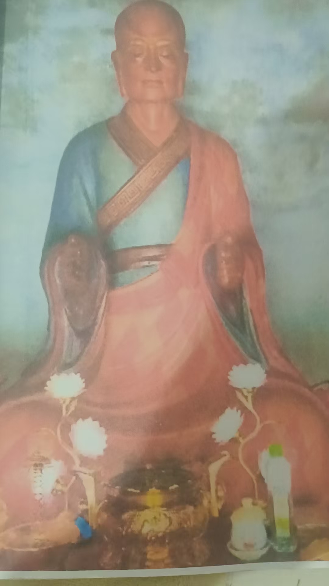
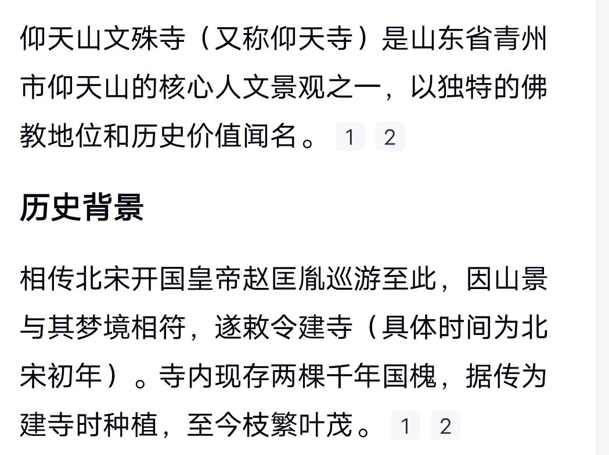
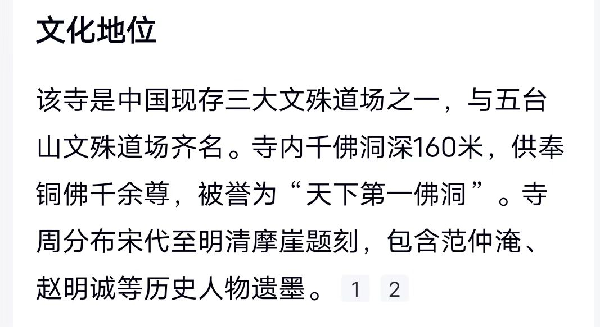

20251211解除封印，凤鸣九天 拉手
符咒术法 原始对话记录解封印有什么感觉？
没感觉，只是解除后清爽，能力迅速修复
老师，请教一下，只靠拉手可以解除封印吗？我特喜欢拉手，因为简单
拉手进入境界，能修到很高
@紫鸢真人 老师，拉手要是气太多怎么办？手撑的很大要抱不住了。我帮别人问下
说明体内能量很强
让能量柱进入体内，手会自动恢复原来状态，继续
再强了，再用念力融入体内，体内亮度增加
反观体内
还有人拉手这么好
我八九岁的时候就是这样
两手排斥排斥，一直到两臂都往后了，还排斥
实际上从小就拉手获得能量

达摩祖师拉手像
实际上从小就拉手获得能量
二十多岁的时候，去家西边十一公里，仰天山文殊院
见到这尊像
问了周边的人都说是山神像
门口写着是祖师殿，也没人知道是谁
后来，去北京恭亲王府，和珅府，家里供着一模一样一尊
写着达摩祖师像
才知道仰天山文殊院，是达摩祖师
也是奇怪，本来就觉得有渊源
进殿身上会发热
试着把手伸到达摩祖师两手间，更加温热
难道小时候，看到墙外那白衣老者是达摩祖师吗


以前，万佛洞是石像
文哥的时候，全砸了
九几年，我们那里一个居士，捐款八百万，全换成铜像
解除封印，是一件清爽而没感觉的事
"解封印有什么感觉？"
"没感觉，只是解除后清爽，能力迅速修复。"
记录里就是这么一问一答，短得像电报。标题还剩半句，"凤鸣九天"，正文没有展开，我猜是个意象，不是当晚的主题。
有人追问：只靠拉手，能解除封印吗？我特别喜欢拉手，因为它简单。
师父答：拉手进入境界，能修到很高。
接下来是一个很实在的问题。有人帮别的人问：拉手要是气太多怎么办，手撑得很大，要抱不住了。
师父说，说明体内能量很强。让能量柱进入体内，手会自动恢复原来的状态，然后继续。再强了，用念力融入体内，体内亮度增加。接着返观体内。
这几句读下来，能感觉到拉手到一定火候，手上是会有分量的——不是想象的那种，是撑开、抱不住的那种。
然后页子翻到另一边，讲起了达摩祖师。
师父说，他八九岁的时候就是这样：两手排斥，一直排斥，到两臂都往后了，还在排斥。"实际上从小就拉手获得能量。"
二十多岁的时候，他去家西边十一公里的仰天山文殊院。见到一尊像，问周边的人，都说是山神像。门口写着祖师殿，也没人知道是谁。
后来他去北京恭亲王府，也就是和珅府，看见家里供着一模一样的一尊，写着达摩祖师像。
这才知道，仰天山文殊院供的是达摩祖师。
他说也奇怪，本来就觉得有渊源。进殿身上会发热，试着把手伸到达摩祖师两手之间，更加温热。
于是留了一句自问：难道小时候，看到墙外那白衣老者，是达摩祖师吗。
页子到这里就停了。
一尊像，一个没感觉的封印，一句没头没尾的"凤鸣九天"。都留在这一页里。